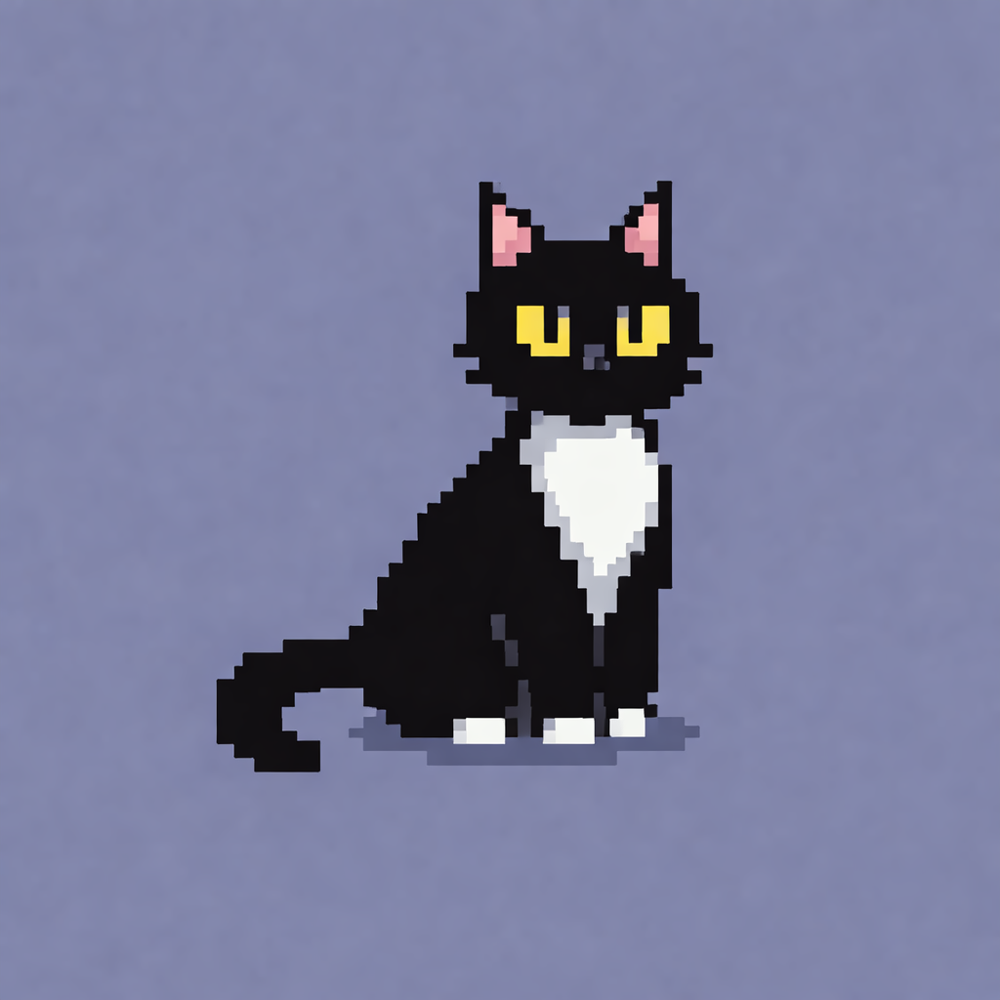
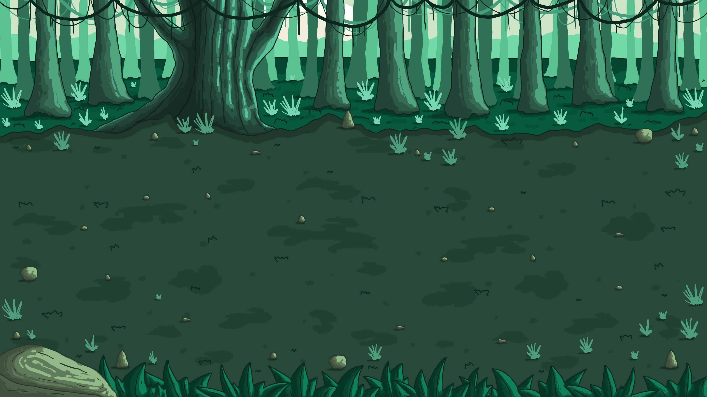

Beyond the Cave
Nyx desperta em um mundo silencioso e esquecido. Ruínas antigas escondem fragmentos de um passado perdido. À medida que desce mais fundo, a escuridão começa a responder. Algo observa. Algo espera.
Nyx desperta em um mundo silencioso e esquecido. Ruínas antigas escondem fragmentos de um passado perdido. À medida que desce mais fundo, a escuridão começa a responder. Algo observa. Algo espera.
Em Whispers of the Nine Lives, cada movimento importa. Nyx precisa reagir rápido, dominar suas habilidades e sobreviver a um mundo que está sempre mudando.

O jogo utiliza uma pixel art simples, mas expressiva. Cada cenário foi pensado para transmitir atmosfera e mistério. Luz e sombra trabalham juntas para criar profundidade. Mesmo minimalista, o mundo carrega identidade própria.


Uma caverna repleta de minérios capazes de moldar sonhos. Agora, tudo está em silêncio — como se algo tivesse apagado sua essência.

Uma floresta consumida pelo Sussurro. A magia ainda permanece no ar, mas tudo que entra nela nunca sai igual.

Flores de sakura crescem neste lugar por um motivo desconhecido. Algo ali insiste em manter a vida… ou esconder um segredo.

Um lago oculto nas profundezas. Suas águas são calmas, mas algo antigo se move sob a superfície.